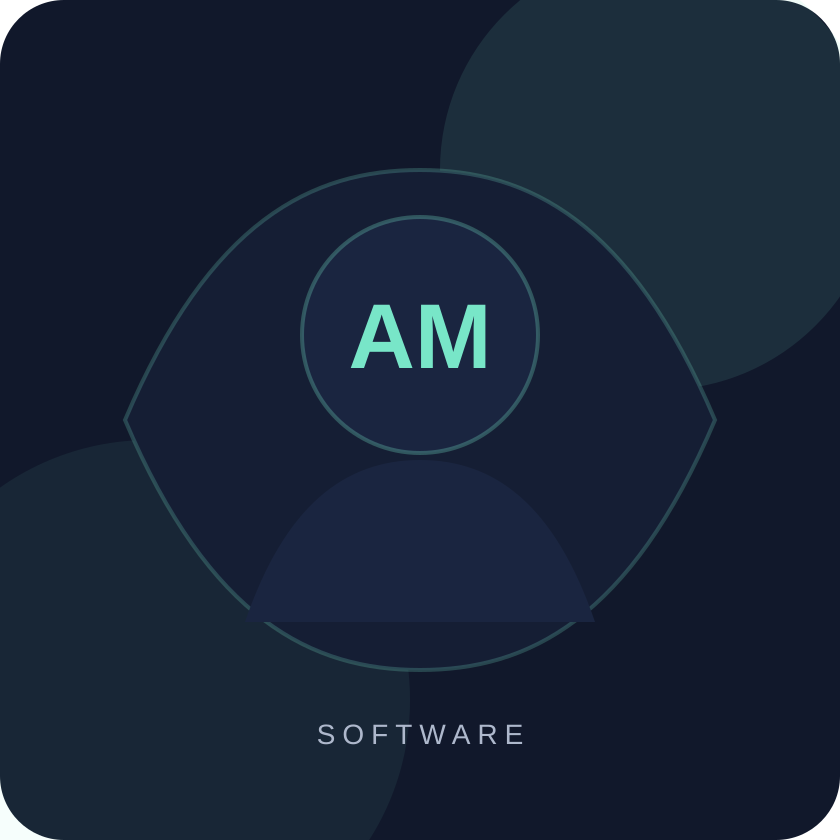

Frontend
HTML5, CSS3, diseño responsive, Flexbox, Grid y fundamentos de JavaScript.
Estudiante · Desarrollo de Software
Me estoy formando como desarrollador de software y disfruto transformar necesidades concretas en soluciones claras, funcionales y fáciles de usar.

Sobre mí
Actualmente curso la Tecnicatura en Desarrollo de Software. Durante mi formación trabajé en proyectos que combinan análisis de requerimientos, modelado de datos, diseño de interfaces y programación.
Me interesa seguir creciendo en desarrollo web y de aplicaciones, incorporando buenas prácticas de código, accesibilidad, trabajo colaborativo y documentación.
Habilidades
HTML5, CSS3, diseño responsive, Flexbox, Grid y fundamentos de JavaScript.
C#, programación orientada a objetos, lógica, validaciones y pruebas básicas.
MySQL, modelado entidad-relación, consultas y organización de información.
Requerimientos, casos de uso, diagramas, prototipos y documentación técnica.
Proyectos
Selección académica
Proyecto académico orientado a procesos de gestión, turnos, estudios, trazabilidad, modelado de datos y prototipado de interfaces.
Aplicación para administrar reactivos, lotes, vencimientos, cantidades y búsqueda, con persistencia local e importación/exportación de datos.
Sistema académico para registrar socios y no socios, gestionar cuotas, vencimientos y accesos según el tipo de usuario.
Un poco más personal
Contacto
Podés escribirme para compartir una propuesta, conversar sobre tecnología o intercambiar ideas sobre proyectos.
github.com/adanmateo1889